Jurnal Eropa · Hari 16 dari 16
Hari terakhir, dan rencananya cuma satu: naik ke bukit di ujung timur kota, tempat seluruh Edinburgh bisa dilihat sekaligus. Di atas sana ada monumen berbentuk teropong yang ditancapkan terbalik, sebuah kuil Yunani yang berhenti dibangun di tengah jalan, dan satu papan penjelasan yang dibaca pada detik yang kebetulan sekali tepat.
Enam belas hari, dan yang tersisa tinggal satu pagi. Tidak ada museum yang dikejar, tidak ada tiket yang harus dipesan. Cuma satu ide sederhana: naik ke tempat paling tinggi yang bisa dicapai dengan jalan kaki, lalu melihat kotanya sekali lagi dari atas — termasuk semua tempat yang tiga hari terakhir dijalani satu per satu dari bawah.
Dua gedung yang layak dilihat dulu sebelum menanjak
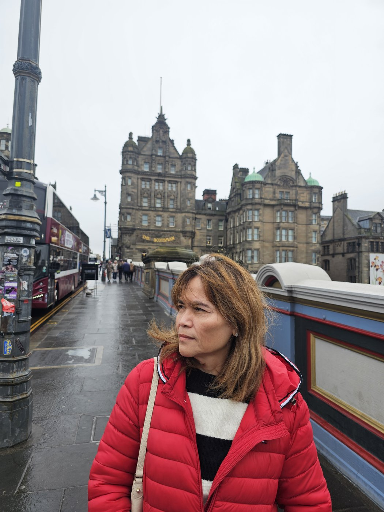
Jembatan ini melintas persis di atas stasiun tempat kereta dari London berhenti tiga hari lalu. Dan gedung di seberangnya dibangun oleh sebuah koran — pada zaman ketika koran punya cukup uang dan cukup rasa percaya diri untuk membangun gedung yang bentuknya seperti istana.
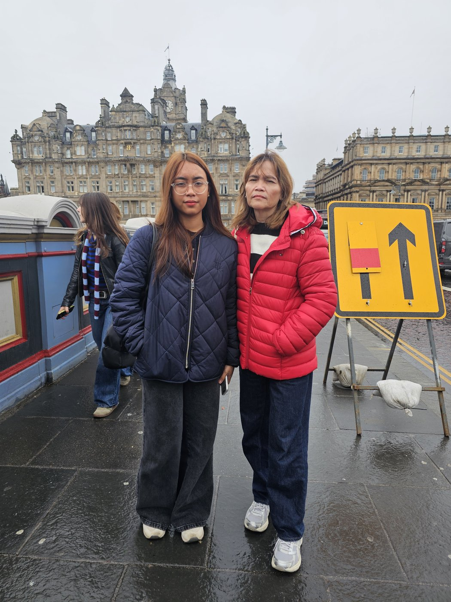
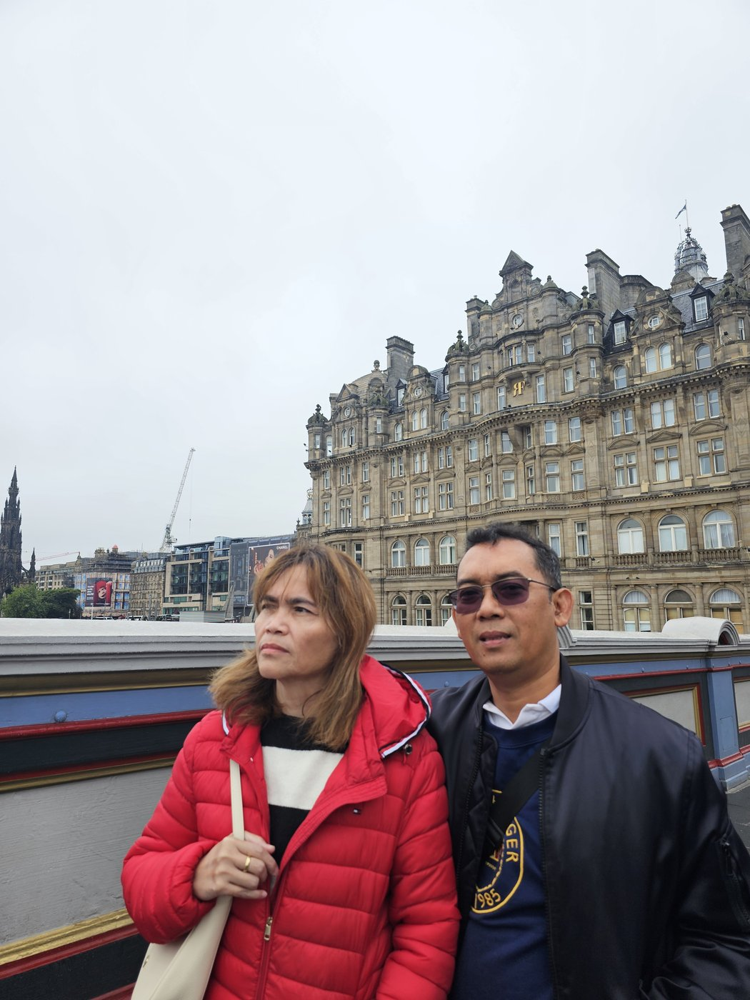
Jam 12.20 dan 12.21. Gedung besar berkubah runcing itu hotel yang berdiri tepat di atas stasiun. Dan di foto kanan, jauh di kiri, monumen Walter Scott muncul lagi — kali ini kecil sekali.
Ada satu cerita yang melekat pada menara jam hotel itu, dan sudah lama jadi bagian dari kota ini: jamnya sengaja disetel beberapa menit lebih cepat dari waktu sebenarnya, supaya orang yang mengejar kereta di stasiun di bawahnya tidak ketinggalan. Katanya cuma sekali setahun jam itu dikembalikan ke waktu yang benar, yaitu pada malam pergantian tahun, ketika justru semua orang perlu tahu detik yang tepat.
Jujur saja: foto ini tidak cukup tajam untuk membuktikannya. Muka jamnya sudah dizoom sampai batas, dan jarumnya tetap tidak bisa dibaca dengan yakin. Jadi ceritanya ditulis di sini sebagai cerita yang menempel pada gedungnya, bukan sebagai sesuatu yang berhasil dicocokkan dengan jam di kamera.
Sudah jadi tema tetap perjalanan ini
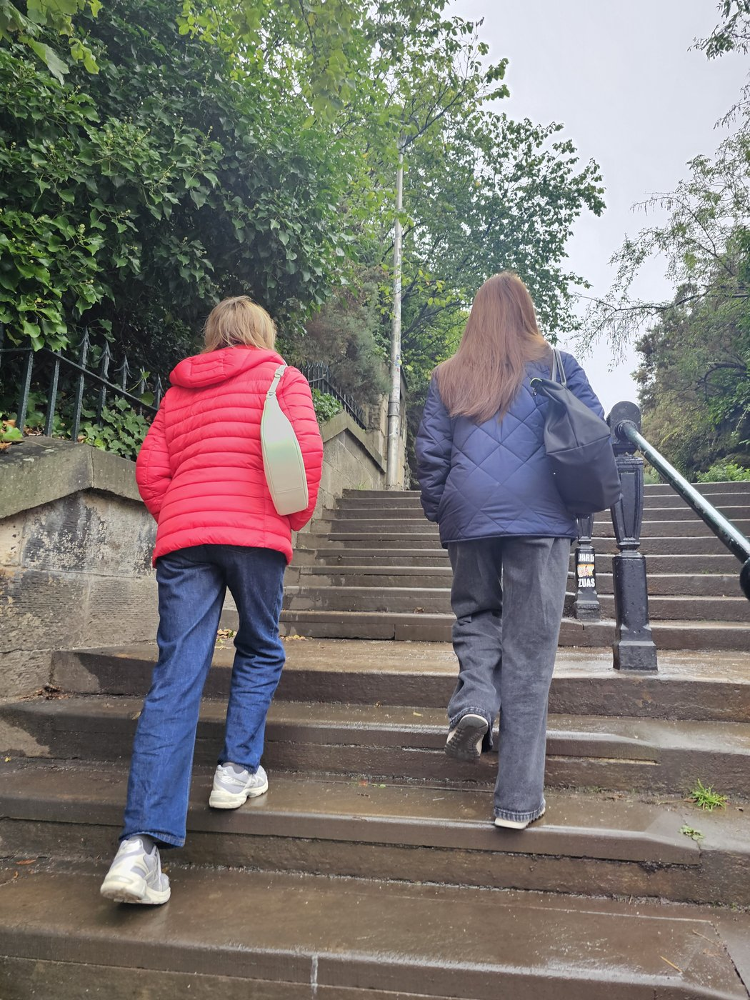
Kalau ada satu benda yang paling sering muncul di enam belas hari ini, itu tangga. Tangga stasiun, tangga apartemen tanpa lift, tangga gang sempit Kota Tua, tangga menuju kampus. Hari terakhir pun ditutup dengan tangga.
Yang ini naik ke Calton Hill. Dan menurut papan yang nanti dibaca di atas, bukit ini punya gelar yang tidak main-main: “Edinburgh’s First Public Park” — taman umum pertama kota ini. Artinya, jauh sebelum taman kota jadi hal biasa, tempat ini sudah dibuka untuk siapa saja, bukan cuma untuk pemiliknya.
Dan di puncaknya, sebuah bola
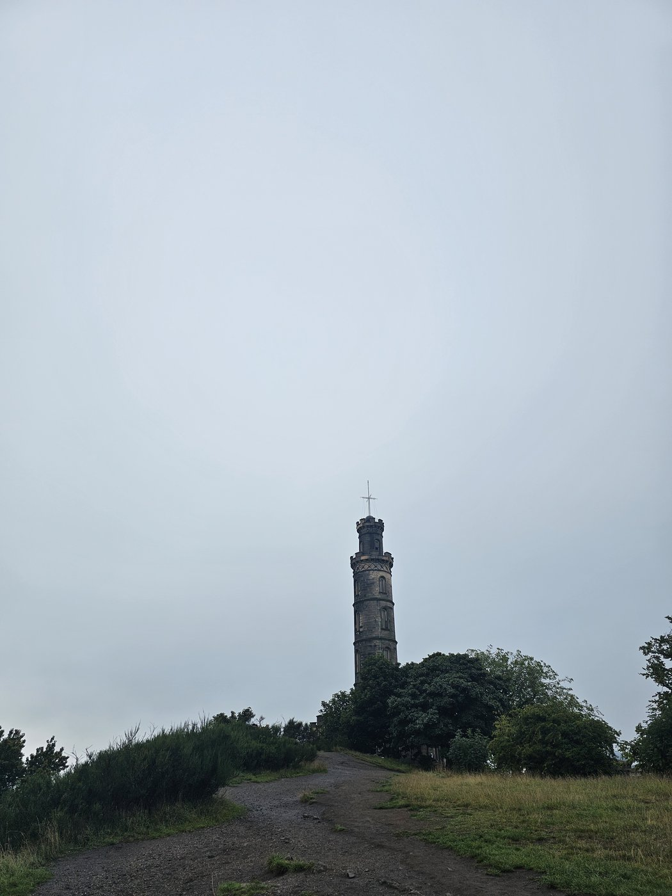
Papan penjelasannya ada di rumput di dekat kakinya, dan isinya dibaca sampai habis. Ini yang tertulis, apa adanya:
Tapi bagian yang paling menarik dari papan itu bukan soal Nelson. Melainkan soal benda bulat di puncaknya.
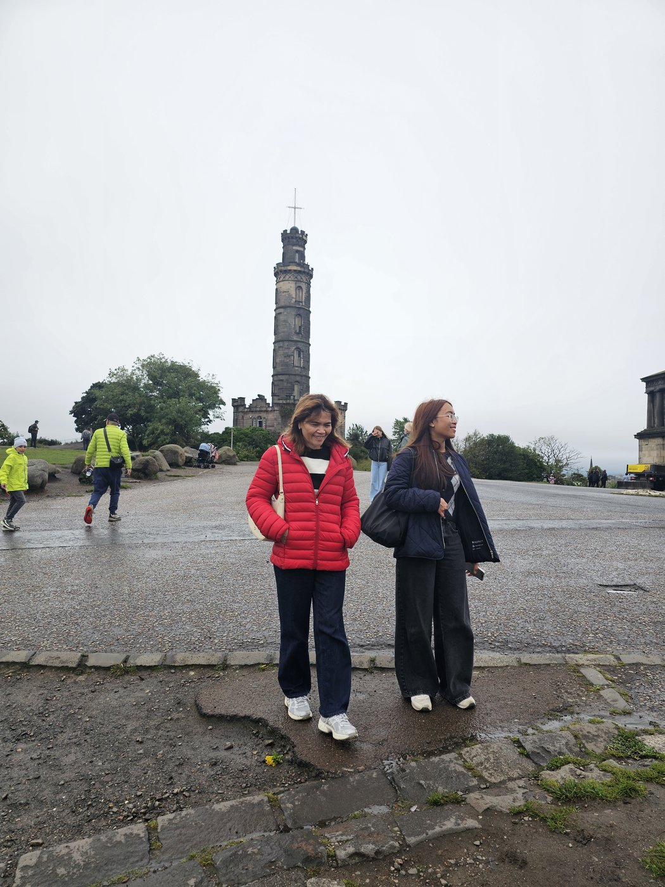
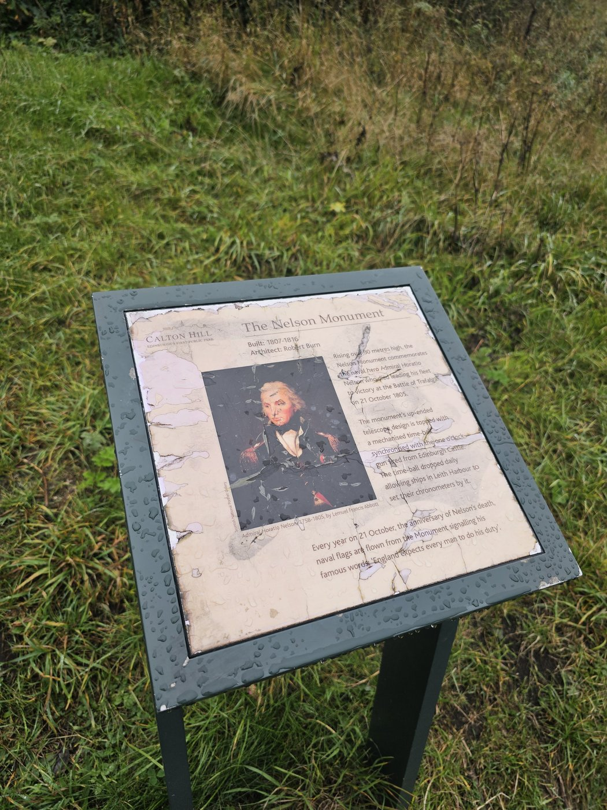
Jam 12.34 dan 12.59. Papannya sendiri sudah menyedihkan kondisinya — catnya mengelupas, permukaannya retak-retak — tapi tulisannya masih terbaca sampai kalimat terakhir.
Kalimat terbaik di papan itu, dan kebetulan waktunya
Diterjemahkan dari papannya, kurang lebih begini:
Berhenti sebentar di situ, karena isinya sebuah masalah teknis yang serius. Kapal di laut butuh tahu jam yang tepat — bukan untuk urusan janjian, tapi untuk menghitung posisi. Bujur sebuah kapal dihitung dari selisih antara waktu setempat dan waktu di pelabuhan asal. Meleset beberapa detik saja sudah cukup menggeser perhitungan posisi lebih dari satu kilometer, dan di laut selisih segitu bisa berarti karang.
Masalahnya, jam kapal tidak bisa disetel lewat telepon. Maka kota ini membangun jawabannya dalam bentuk yang bisa dilihat dari jauh: sebuah bola besar yang dinaikkan ke ujung tiang, lalu dijatuhkan tepat pada detik yang sama setiap hari. Nakhoda di pelabuhan tinggal mengarahkan teropong ke bukit ini, menunggu bolanya jatuh, dan memutar jarum kronometernya.
Lalu kenapa perlu meriam juga, padahal sudah ada bolanya? Papan itu tidak menjelaskannya, tapi alasan yang biasa diberikan masuk akal sekali di kota ini: kabut. Kalau bukitnya tertutup, bolanya tidak terlihat dari pelabuhan. Suara tembakan tetap sampai. Satu isyarat untuk mata, satu untuk telinga, dua-duanya dilepas pada detik yang sama.
Sekarang bagian yang baru ketahuan waktu foto-fotonya dicocokkan di rumah. Foto papan itu bertanggal 12.59.52.
Tujuh puluh detik sebelum jam satu. Artinya kalimat tentang meriam jam satu itu sedang dibaca — secara harfiah — satu menit sebelum meriamnya ditembakkan. Dan foto berikutnya di kamera, 13.01.05, diambil di lapangan terbuka di puncak bukit yang sama, menghadap lurus ke arah kastil.
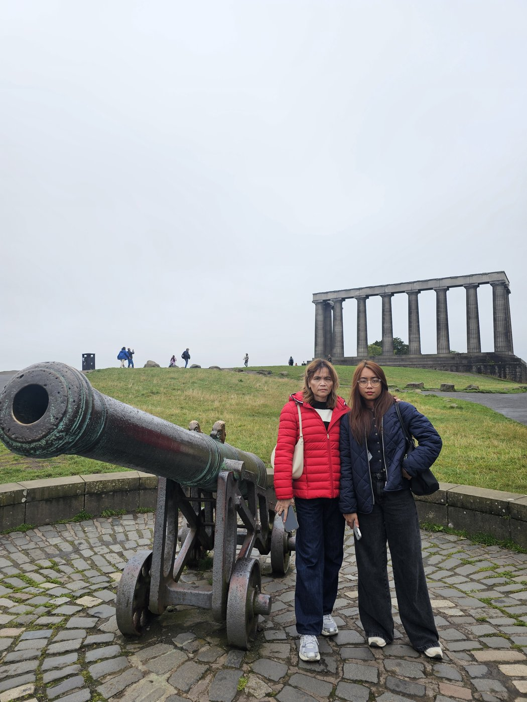
Tidak ada catatan apakah suaranya terdengar hari itu. Yang bisa dipastikan cuma jamnya, dan jam itu memang cocok.
Dan kota ini memutuskan untuk membiarkannya begitu
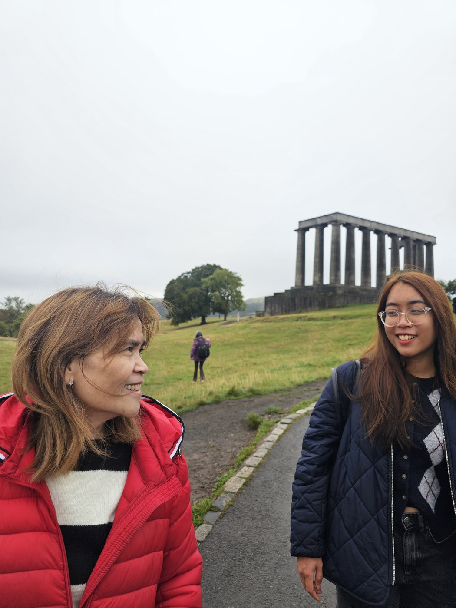
Ini National Monument, dan rencananya dulu besar sekali: sebuah tiruan kuil Parthenon Athena berukuran penuh, dibangun sebagai monumen nasional untuk orang-orang Skotlandia yang gugur dalam perang melawan Napoleon. Batu pertamanya dipasang pada 1820-an, dan uangnya dikumpulkan dari sumbangan.
Sumbangannya habis di tengah jalan. Pekerjaannya berhenti, dan sejak itu tidak pernah dilanjutkan. Yang tersisa cuma satu sisi barisan pilar berdiri di atas alas batu raksasa, terbuka ke langit di segala arah.
Selama bertahun-tahun orang di sini menyebutnya dengan julukan yang pedas — kira-kira “aib Edinburgh”. Tapi yang menarik justru keputusan sesudahnya: kota ini tidak pernah merobohkannya, dan tidak pernah menyelesaikannya. Dua ratus tahun dibiarkan berdiri setengah jadi, dan sekarang bentuk setengah jadi itulah yang jadi siluet paling dikenal dari bukit ini.
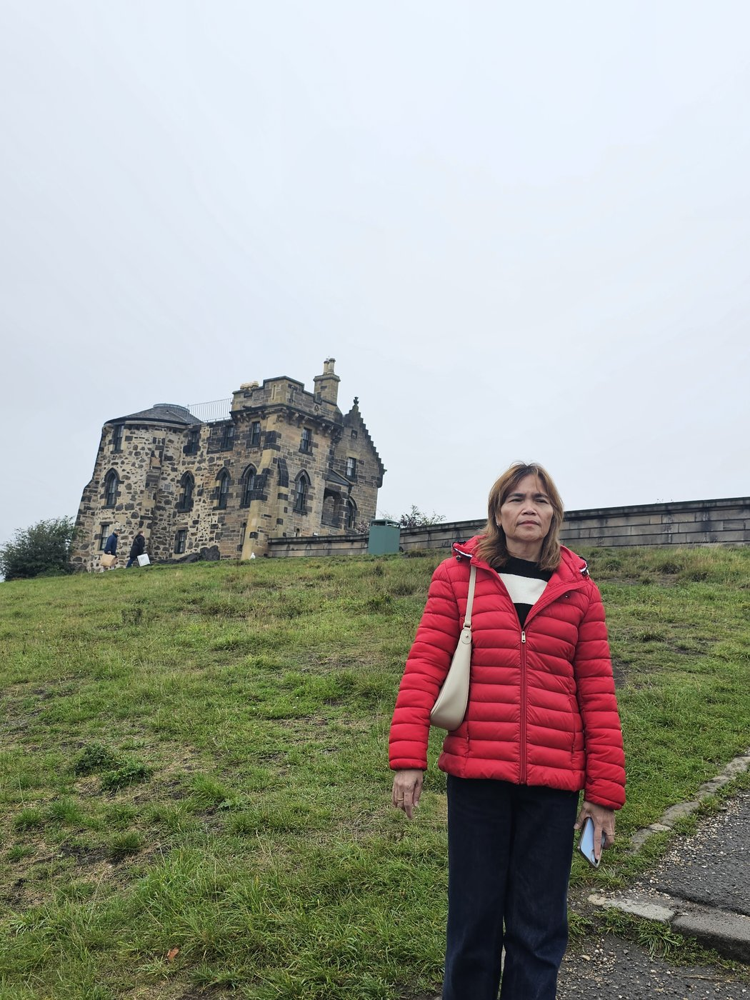
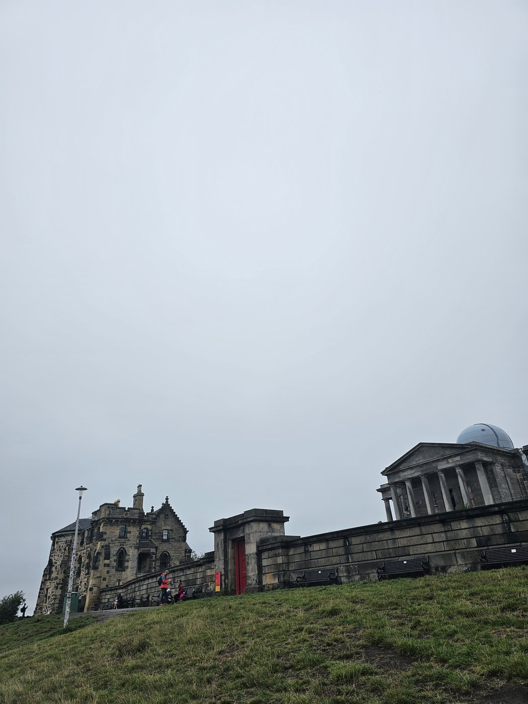
Jam 13.02 dan 13.01. Di puncak bukit yang sama masih ada kompleks gedung berpagar tembok, salah satunya berkubah putih kecil — bentuk yang biasanya berarti satu hal: teropong bintang. Jadi bukit ini dulu bukan cuma tempat memandang kota, tapi juga tempat memandang langit.
Dan coretan yang menutupi bagian terpentingnya
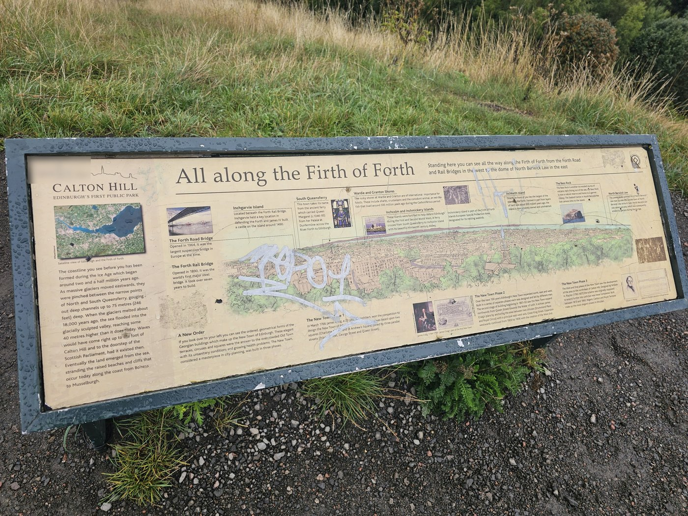
Judul besarnya: “All along the Firth of Forth”, dengan keterangan bahwa dari sini pemandangannya membentang dari dua jembatan Forth di barat sampai ke bukit North Berwick Law di timur. Isinya padat sekali, dan tiga bagian ini yang paling layak dicatat.
Pertama, kenapa bentuk pantainya begitu. Menurut papannya, garis pantai yang terlihat dari sini dibentuk pada Zaman Es yang mulai sekitar dua setengah juta tahun lalu. Gletser raksasa bergerak ke timur, terjepit di antara titik-titik sempit North dan South Queensferry, dan menggerus saluran sedalam 75 meter. Ketika gletsernya mencair sekitar 18.000 tahun lalu, laut membanjiri lembah itu dan permukaannya sempat 40 meter lebih tinggi daripada sekarang — cukup tinggi, kata papannya, untuk membuat ombak sampai ke kaki bukit tempat papan ini berdiri.
Kedua, dua jembatannya. Dibaca dari papannya: jembatan jalan raya dibuka 1964, dan waktu itu jembatan gantung terbesar di Eropa; jembatan keretanya dibuka 1890, jembatan baja besar pertama di dunia, dan butuh lebih dari tujuh tahun untuk membangunnya.
Ketiga — dan ini yang paling mengena — asal-usul kota di bawah sana. Papan itu menjelaskan bahwa deretan gedung bergaris lurus dan bersudut rapi yang terlihat dari bukit ini, yang disebutnya Kota Baru, dibangun sebagai jawaban atas Kota Tua yang terlalu padat, kotor, dan mulai menimbulkan masalah kesehatan. Lalu satu kalimat yang bikin berhenti:
Dua puluh dua tahun. Dan rancangannya, menurut papan yang sama, sederhana sekali dasarnya: dua lapangan yang dihubungkan tiga jalan sejajar. Itu saja. Dua ratus enam puluh tahun kemudian, tiga jalan sejajar itu masih jadi kerangka kota — dan salah satunya adalah jalan yang kemarin dijalani seharian.
Sekarang bagian yang tidak enak. Papan itu dicoret. Ada coretan cat semprot perak besar melintang tepat di atas gambar panorama kotanya, dan ujungnya menutupi sebagian kalimat tentang James Craig tadi — persis kata-kata yang menjelaskan bagaimana kota ini dirancang. Ada pula tulisan pena di sudut kirinya yang isinya kasar; bagian itu sengaja diburamkan di foto halaman ini.
Papannya juga sudah tua: catnya mengelupas, ada lubang kecil di beberapa titik, permukaannya menggelembung kena hujan bertahun-tahun. Jadi dua hal terjadi sekaligus pada benda yang sama — ada yang merusaknya dengan sengaja, dan ada yang membiarkannya rusak pelan-pelan.
Termasuk semua yang tiga hari terakhir dijalani dari bawah
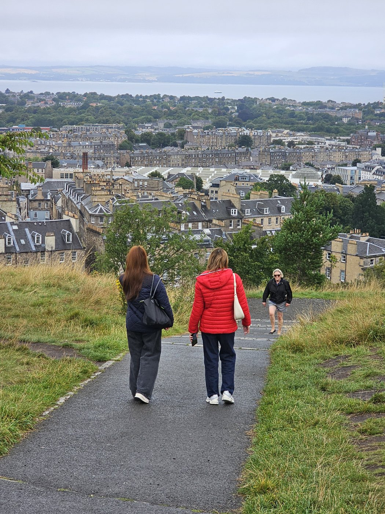
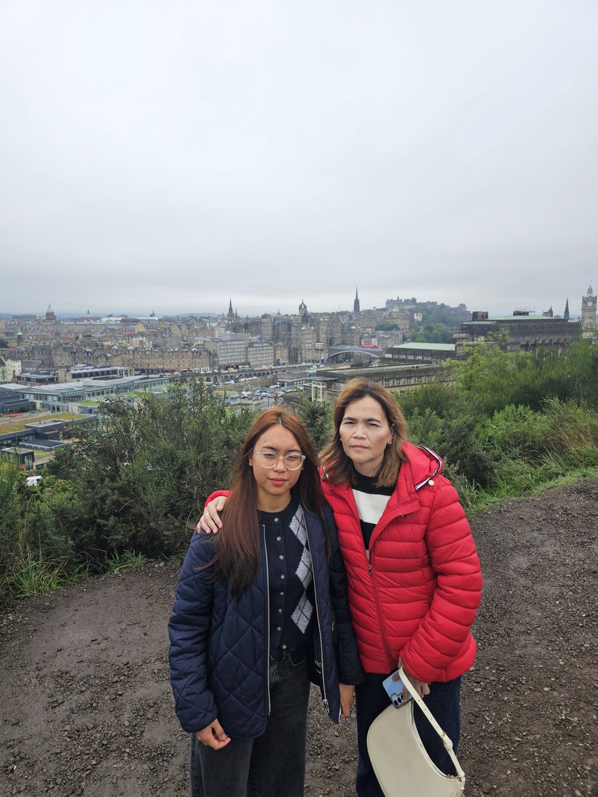
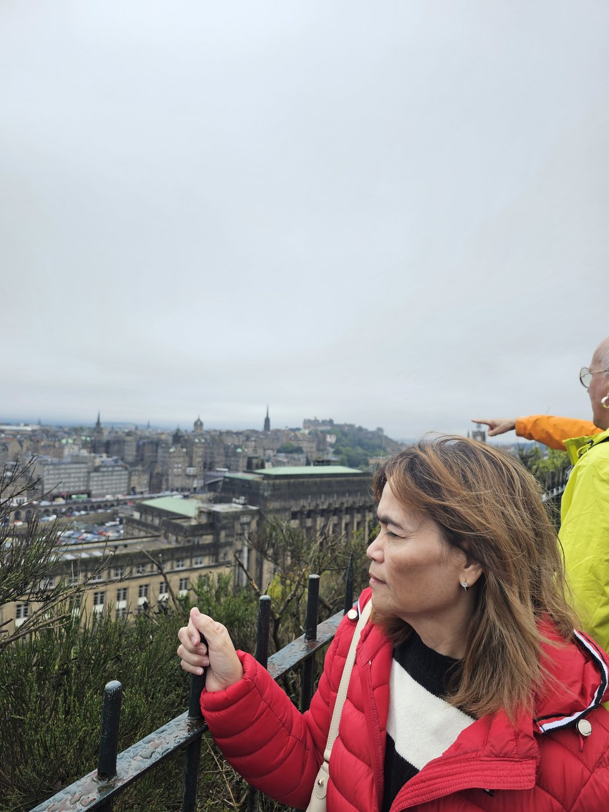
Jam 12.49 dan 12.54. Dari pagar itu kelihatan jalan utama kota membentang lurus — jalan yang di Hari 15 dijalani dari ujung ke ujung dengan kaki sendiri.
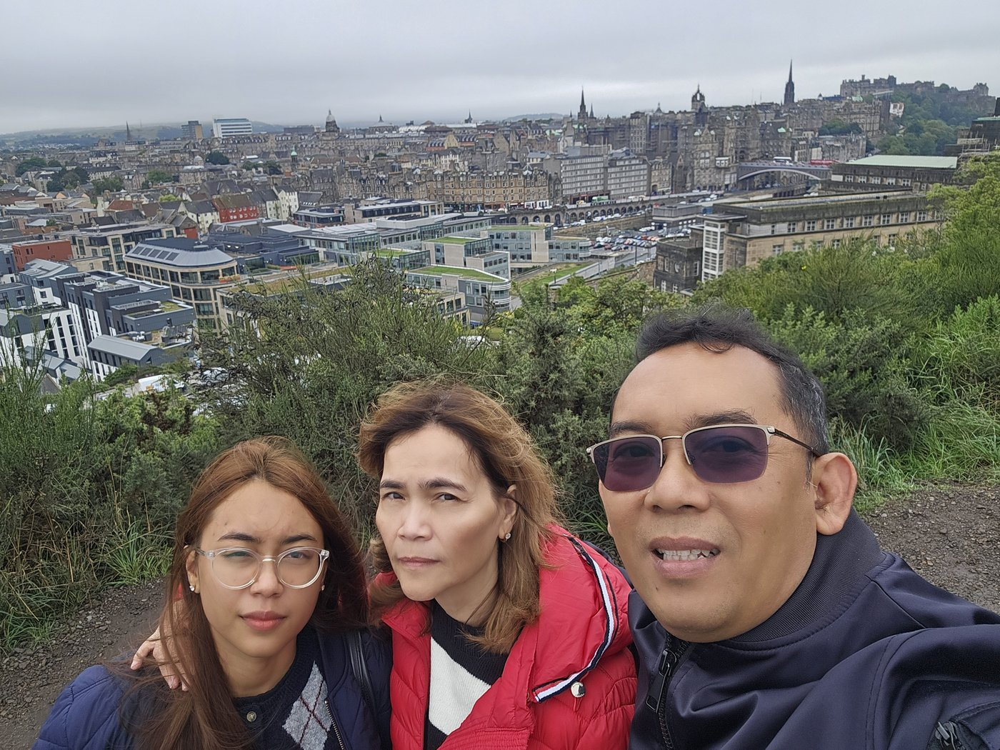
Ada satu hal yang baru terasa setelah berdiri di sini. Tiga hari terakhir dihabiskan berjalan di bawah sana — naik turun gang sempit, menyeberang jembatan, masuk katedral, duduk di kafe lantai atas, mengantar satu orang ke halte trem. Semuanya terasa besar dan berjauhan waktu dijalani dengan kaki.
Dari atas sini, semuanya muat dalam satu pandangan. Bukit kastilnya di sana, monumen runcingnya di sana, deretan atap Kota Baru di sana, dan laut di ujungnya. Jarak yang kemarin bikin betis pegal ternyata cuma beberapa sentimeter di mata.
Jam menunjukkan 13.02 waktu foto terakhir di bukit ini diambil. Perjalanannya sendiri belum benar-benar selesai di titik itu — masih ada koper yang harus dibereskan, masih ada penerbangan pulang. Tapi kalau harus dipilih satu tempat untuk berdiri terakhir kali di Eropa, tempat yang bisa melihat semuanya sekaligus terdengar cukup pantas.